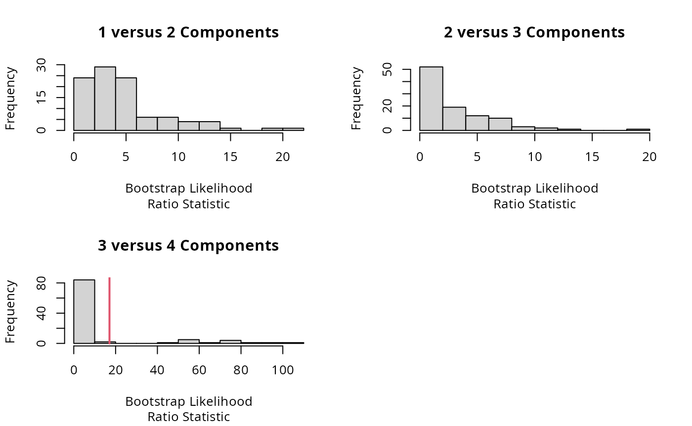
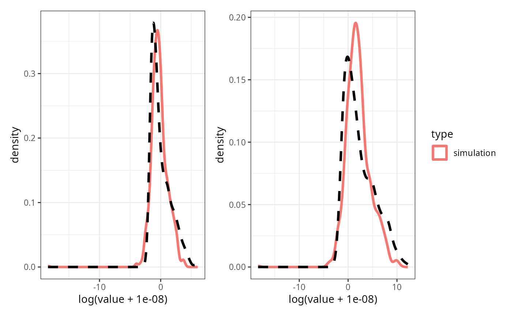
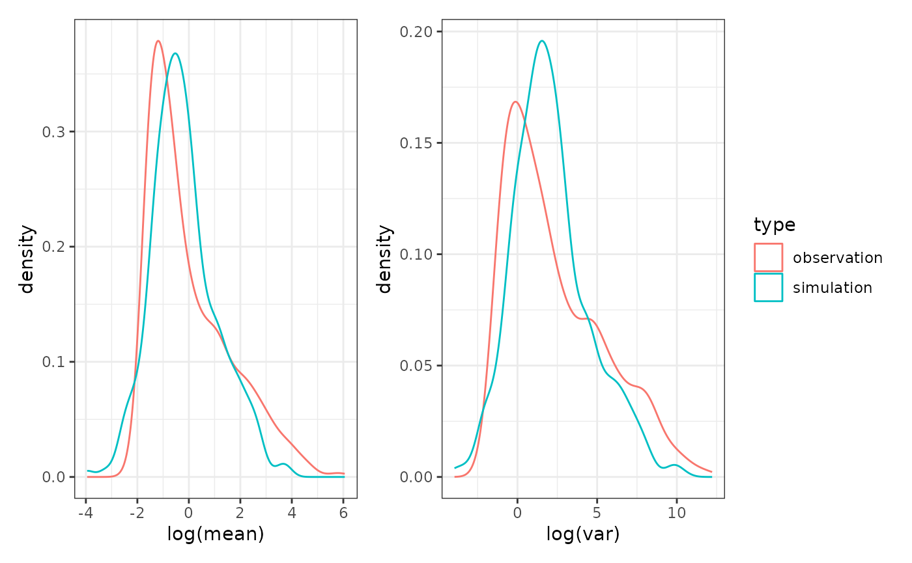

Power and Sample Size Estimation for Microbiome Analysis
Michael Agronah and Benjamin Bolker
2025-11-16
stub.rmdPackage Description and Functionalities
power.nb is a package developed for estimating
statistical power and sample sizes in differential abundance microbiome
studies. The package presents novel methods for estimating statistical
power for individual taxa (feature, OTU/ASV, or species) and for sample
size calculation accounting for effect sizes and mean abundance of
taxa.
power.nb also presents two novel microbiome data
simulations frameworks: Cask's and RRSim. The
method implemented in MixGaussSim models the distribution
of mean abundance of taxa and the distribution of fold change (as a
function of mean abundance of taxa) by finite Mixture of Gaussian
distributions. Microbiome count data is then simulated from a negative
binomial distribution. Detailed description of the
MixGaussSim method is presented in the paper “Investigating
statistical power of differential abundance studies” (Agronah and Bolker 2025).
RRSim (this simulation method is still under development
and some functions in RRSim are yet to tested), on the
other hand models the mean abundance of all taxa jointly with a
mixed-effects model while accounting for correlations among taxa within
subjects and zero inflation in microbiome data. Given the high
dimensionality of microbiome data (usually having hundreds or thousands
of taxa), modelling correlations between taxa requires estimating
thousands or even millions of parameters for the correlation matrix.
RRSim uses the reduced rank functionality implemented in
the glmmTMB (Magnusson et al.
2017) packages to reduce the number of parameter estimates
required of the variance-correlation matrix. Details of this method is
presented in the thesis “A Novel
Approach for Simulation-Based Power Estimation and Joint Modeling of
Microbiome Counts” (Agronah 2025)
Installation
Install the package from GitHub using devtools:
install.packages("devtools")
devtools::install_github("magronah/power.nb")Simulating microbiome data
Since the goal of differential abundance studies is to identify taxa that differ significantly between groups, statistical power must be estimated at the level of individual taxa. Because of the complexity of microbiome data, analytical approaches based on theoretical distributions of test statistics (e.g., non-central t or chi-squared distributions) are not feasible (Arnold et al. 2011). Therefore, power estimation typically relies on simulation-based methods that can mimic the characteristics of real microbiome data.
Statistical power for a given taxon depends on both its mean
abundance and effect size (defined in this package as fold changes)
(Agronah and Bolker 2025). Thus,
estimating the distributions of mean abundance and fold change of taxa
explicitly will offer great benefit for estimation of statistical power
for individual taxon. We use the MixGaussSim simulation
approach to simulate microbiome data for power calculation due to its
flexibility in modelling the distributions of taxa mean abundances and
effect sizes explicitly as as well as their relationship.
Two ways to obtain parameters for data simulation using MixGaussSim
There are one of two ways to obtain the parameters of the
MixGaussSim method for data simulation. Users can:
1. pre-specify a set of parameters: To help users
decide on plausible parameter values, we have run
MixGaussSim on some of the microbiome datasets used in the
paper “Microbiome differential
abundance methods produce different results across 38 datasets”
(Nearing et al. 2022) and presented the
parameter estimates obtained from each of these datasets (see Appendix for the parameter estimates from these
datasets ).
2. estimate parameters from an existing dataset:
Secondly, users can also obtain estimates directly from fitting the
model implemented in MixGaussSim to existing datasets. The
following steps outlines the process for estimating parameters from an
existing dataset.
Dataset
We use a subset of the Obesity dataset, one of the datasets analyzed in (Nearing et al. 2022). The full dataset contains 52 samples and 1203 taxa.
##Load libraries
library(tidyverse)
library(dplyr)
library(power.nb)
library(patchwork)
data_path = system.file("pkgdata", package = "power.nb")
##Read count data and metadata
data <- read.table(
file.path(data_path, "ob_ross_ASVs_table.tsv"),
header = TRUE, sep = "\t",
check.names = FALSE, comment.char = "",
row.names = 1
)
metadata <- read.table(
file.path(data_path, "ob_ross_metadata.tsv"),
header = TRUE, sep = "\t",
check.names = FALSE, comment.char = ""
)
metadata <- metadata %>%
setNames(c("SampleID", "Groups"))
dim(data); dim(metadata)## [1] 1203 52## [1] 52 2## BD0017v13 BD0027v13 BD0022v13 BD0040v13 BD0044v13 BD0057v13 BD0115v13
## denovo619 0 0 0 0 0 0 0
## denovo618 0 0 0 0 0 0 0
## denovo617 0 0 0 0 9 0 0
## denovo616 0 0 0 0 0 0 0
## denovo615 0 0 0 0 0 0 0
## denovo614 0 0 0 0 0 0 0
## BD0190v13 BD0072v13 BD0112v13 BD0246v13 BD0247v13 BD0266v13 BD0235v13
## denovo619 8 0 0 0 0 0 0
## denovo618 0 0 0 0 0 0 0
## denovo617 0 0 0 1 3 0 0
## denovo616 0 0 0 0 0 0 0
## denovo615 0 0 0 0 0 0 0
## denovo614 0 0 0 1 1 8 0
## BD0295v13 BD0255v13 BD0300v13 BD0331v13 BD0321v13 BD0351v13 BD0409v13
## denovo619 1 0 0 0 0 0 8
## denovo618 0 0 0 0 0 0 0
## denovo617 0 0 0 0 0 2 0
## denovo616 0 0 0 0 27 0 0
## denovo615 0 0 0 0 0 0 0
## denovo614 0 0 1 0 3 1 1
## BD0410v13 BD0375v13 BD0414v13 BD0422v13 BD0464v13 BD0571v13 BD0578v13
## denovo619 0 0 0 0 0 0 0
## denovo618 0 0 0 0 0 0 1
## denovo617 0 0 1 0 0 0 0
## denovo616 0 0 0 0 0 0 0
## denovo615 0 0 0 0 3 0 0
## denovo614 1 0 1 0 0 0 0
## BD0587v13 BD0592v13 BD0594v13 BD0610v13 BD0611v13 BD0613v13 BD0636v13
## denovo619 0 0 0 1 0 0 0
## denovo618 2 0 0 0 0 18 0
## denovo617 1 0 1 0 0 0 0
## denovo616 0 0 0 0 0 0 0
## denovo615 0 0 0 0 0 0 4
## denovo614 1 0 0 0 0 2 0
## BD0616v13 BD0653v13 BD0643v13 BD0654v13 BD0673v13 BD0735v13 BD0760v13
## denovo619 0 0 0 1 0 0 0
## denovo618 0 0 0 0 0 0 0
## denovo617 0 4 0 0 0 5 0
## denovo616 0 0 0 0 0 0 0
## denovo615 0 0 0 0 0 0 0
## denovo614 0 2 0 1 0 0 0
## BD0777v13 BD0758v13 BD0789v13 BD0791v13 BD0821v13 BD0786v13 BD0790v13
## denovo619 0 0 0 0 7 0 0
## denovo618 0 0 0 0 6 0 0
## denovo617 0 0 0 0 0 0 0
## denovo616 0 0 0 0 0 0 0
## denovo615 0 20 0 0 0 0 0
## denovo614 0 0 0 0 0 0 0
## BD0913v13 BD0954v13 BD0981v13
## denovo619 0 0 0
## denovo618 0 0 0
## denovo617 0 0 0
## denovo616 0 0 0
## denovo615 0 0 0
## denovo614 0 1 0## SampleID Groups
## 1 BD0017v13 OB
## 2 BD0027v13 H
## 3 BD0022v13 H
## 4 BD0040v13 OB
## 5 BD0044v13 OB
## 6 BD0057v13 HPre-filtering low abundant taxa
Low abundant tax exhibit high variability, posing challenges in detecting significant differences between groups (Love, Huber, and Anders 2014). Pre-filtering steps, as is routinely done in differential abundance analysis, is used to filter out these low abundant taxa. We filter out taxa with less that 10 count in less that 5 samples.
filter_data = filter_low_count(countdata = data,
metadata = metadata,
abund_thresh = 2,
sample_thresh = 2,
sample_colname = "SampleID",
group_colname = "Groups")
dim(filter_data)## [1] 903 52Fold change and Dispersion Estimation
We estimate fold change for each taxon and dispersion parameters
using the negative binomial model implemented in the DESeq2
package (Love, Huber, and Anders 2014).
The negative binomial model is widely used in both microbiome and
RNA-seq analyses and is implemented in the NBZIMM (Yi 2020) and edgeR R packages
(Robinson, McCarthy, and Smyth 2010). The
model implemented in the DESeq2 package is described as
follows:
Let
represent the observed count for the
taxon in the
sample. The model assumes that
where the mean is defined as
,
and
is the normalization factor for sample
.
The expected abundance prior to normalization,
,
is modeled as
with
denoting the covariates and
the associated coefficients. The dispersion parameter is assumed
constant across samples for each taxon, such that
.
This formulation links the variance and mean through
Estimation of the regression coefficients
and dispersion parameters
was carried out using the empirical Bayes shrinkage procedures
implemented in the DESeq2 package Anders and Huber (2010).
unique(metadata$Groups)## [1] "OB" "H"
foldchange_est <- deseqfun(countdata = filter_data,
metadata = metadata,
alpha_level = 0.1,
ref_name = "H",
group_colname = "Groups",
sample_colname = "SampleID")
logfoldchange = foldchange_est$deseq_estimate$log2FoldChange
head(logfoldchange)## [1] 0.32958211 -0.90669149 0.23052500 -0.51398232 -0.02770075 -0.82149821Modeling the distribution of log mean counts
We modelled the log mean abundance (defined as the logarithm of the arithmetic mean abundance across both control and treatment groups) as a finite mixture of Gaussian distributions. To determine the optimal number of mixture components, denoted by , we employed a parametric bootstrap approach to sequentially compare models with and components.
Let the observed data be denoted by , where each represents the log mean abundance for the taxon. The mixture model with components is given by
where are the mixing proportions satisfying , and denotes the normal density with mean and variance .
To test whether adding an additional component improves model fit, we formulated the hypotheses as:
The test statistic is the likelihood ratio statistic:
where and are the maximized log-likelihoods under the - and -component models, respectively.
To approximate the null distribution of , we performed a parametric bootstrap using bootstrap samples generated under . For each bootstrap replicate , data were simulated from the fitted -component model, and both the null and alternative models were re-fitted to obtain . The empirical -value is computed as
where is the observed likelihood ratio statistic.
If , the null hypothesis is rejected in favor of the -component model. Testing proceeds sequentially for until the -value exceeds the significance threshold, at which point the -component model from the last accepted test is selected as the optimal mixture size (Benaglia et al. 2010).
logmean = log(rowMeans(filter_data))
### function to mute printing out messages about
### update on the number of iterations
quiet <- function(expr) {
out <- suppressWarnings(suppressMessages(
capture.output(res <- eval.parent(substitute(expr)))
))
res}
logmeanFit = quiet(logmean_fit(logmean, sig = 0.05,
max.comp = 4, max.boot = 100))
logmeanFit## $param
## lambda sigma mu
## 1 0.1982037 0.1841083 -1.4702824
## 2 0.3594970 0.4703611 -0.7892082
## 3 0.4422992 1.4529581 1.3381490
##
## $components
## [1] 3
Modelling the distribution of log fold change estimates
We also modelled log fold change of taxa as a finite mixture of Gaussian distributions. Fold change is typically related to mean abundance (Love, Huber, and Anders 2014); therefore, we expressed the mean and standard deviation parameters of the individual Gaussian components as functions of log mean abundance. Detailed description of the model fitted to log fold changes is presented in the paper “Investigating statistical power of differential abundance studies” (Agronah and Bolker 2025).
logfoldchangeFit <- quiet(logfoldchange_fit(logmean,
logfoldchange,
ncore = 3,
max_sd_ord = 2,
max_np = 5,
minval = -5,
maxval = 5,
itermax = 100,
NP = 800,
seed = 100))
logfoldchangeFit## $par
## logitprob_1 mu_int_1 mu_int_2 mu_slope_1 mu_slope_2 logsd_.1_1
## -4.55703267 0.03677531 -1.42836719 0.06345551 -0.81207193 -0.33404343
## logsd_.1_2 logsd_.L_1 logsd_.L_2 logsd_.Q_1 logsd_.Q_2
## 1.45264954 0.38750859 2.81470432 -0.11822723 0.45802656
##
## $np
## [1] 2
##
## $sd_ord
## [1] 2
##
## $aic
## [1] 1779.056Modelling the dispersion estimates
Because dispersion tends to depend on mean count abundance with rarer
taxa showing greater variability we modeled the dispersion as a
nonlinear function of the mean, following the approach implemented in
DESeq2. The nonlinear function is defined by
where and denote the scaled dispersion and mean abundance respectively. The term represents the asymptotic dispersion level for high abundance taxa, and captures additional dispersion variability. This procedure enables estimation of dispersion values corresponding to given mean counts, facilitating their use in downstream simulations and power analyses.
dispersion = foldchange_est$dispersion
dispersionFit = dispersion_fit(dispersion, logmean)
dispersionFit$param## asymptDisp extraPois
## 1 18.12243 2.597064Simulate count microbiome data
To simulate microbiome data, we first simulate log mean counts and corresponding log fold changes. The simulated log mean counts represent overall log mean counts (i.e., log of the arithmetic mean of the counts in all of treatment and control groups). We then use the simulated log mean count to estimate corresponding dispersion values for each sample through the fitted nonlinear function described in the equation here (see section on Modelling the Distribution of Log Fold Changes). Using the simulated log mean counts and fold changes, we now compute the group specific mean counts (i.e., mean counts of taxa for control group and mean count of taxa for treatment group). We then simulate microbiome count data from the negative binomial distribution using the group specific mean counts and the estimated dispersion values.
Simulate log mean count and log fold change
### Simulated log mean count and log foldchange from the fitted
### log mean count and log foldchange models
logmean_param = logmeanFit$param
logfoldchange_param = logfoldchangeFit
notu = dim(filter_data)[1]
notu## [1] 903
logmean_sim = logmean_sim_fun(logmean_param, notu)
logfoldchange_sim = logfoldchange_sim_fun(logmean_sim = logmean_sim,
logfoldchange_param =
logfoldchange_param,
max_lfc = 15,
max_iter = 30000)
head(logfoldchange_sim)## [1] 1.67394732 -0.72483152 0.09834296 0.73556137 -0.13028789 -0.51072261Simulate counts from the negative binomial distribution
Estimating the dispersion values is done internally within the
countdata_sim_fun function.
nsim = 4
ntreat = sum(metadata$Groups == "OB")
ncont = sum(metadata$Groups == "H")
dispersion_param = dispersionFit$param
countdata_sims = countdata_sim_fun(logmean_param,
logfoldchange_param,
dispersion_param,
nsamp_per_group = NULL,
ncont = ncont,
ntreat = ntreat,
notu,
nsim = nsim,
disp_scale = 0.7,
max_lfc = 15,
maxlfc_iter = 1000,
seed = 121)## mixtools package, version 2.0.0.1, Released 2022-12-04
## This package is based upon work supported by the National Science Foundation under Grant No. SES-0518772 and the Chan Zuckerberg Initiative: Essential Open Source Software for Science (Grant No. 2020-255193).
names(countdata_sim_fun)## NULL
dim(countdata_sims$treat_countdata_list$sim_1)## [1] 903 31
dim(countdata_sims$control_countdata_list$sim_1)## [1] 903 21
dim(countdata_sims$countdata_list$sim_1)## [1] 903 52
dim(countdata_sims$metadata_list$sim_1)## [1] 52 2
length(countdata_sims$logfoldchange_list$sim_1)## [1] 903
length(countdata_sims$logmean_list$sim_1)## [1] 903Comparing the distributions between simulated count d of mean count and fold change from simulation with actual data
We compare the following comparisons between our simulation and the actual dataset
we come distribution of variances of counts of taxa and
the means of taxa from out simulation with those of the actual dataset
library(rlist)
library(latex2exp)
# means
dd_mean <- rbind(
data.frame(value = apply(countdata_sims$countdata_list$sim_1, 1, mean),
type = "simulation"),
data.frame(value = apply(filter_data, 1, mean),
type = "observation")
)
p1_ <- ggplot(dd_mean, aes(x = log(value + 1e-8))) +
geom_density(aes(colour = type), linewidth = 1.2,
data = subset(dd_mean, type == "simulation")) +
geom_density(linetype = "dashed", colour = "black", linewidth = 1.2,
data = subset(dd_mean, type == "observation")) +
theme_bw()
# variances
dd_var <- rbind(
data.frame(value = apply(countdata_sims$countdata_list$sim_1, 1, var),
type = "simulation"),
data.frame(value = apply(filter_data, 1, var),
type = "observation")
)
p2_ <- ggplot(dd_var, aes(x = log(value + 1e-8))) +
geom_density(aes(colour = type), linewidth = 1.2,
data = subset(dd_var, type == "simulation")) +
geom_density(linetype = "dashed", colour = "black", linewidth = 1.2,
data = subset(dd_var, type == "observation")) +
theme_bw()
(p1_ | p2_) + patchwork::plot_layout(guides = "collect")
pp1= apply(countdata_sims$countdata_list$sim_1, 1, function(x){mean(x)})
pp2= apply(filter_data, 1, function(x){mean(x)})
pp11= apply(countdata_sims$countdata_list$sim_1, 1, function(x){var(x)})
pp21= apply(filter_data, 1, function(x){var(x)})
dd_ = data.frame(mean = c( as.numeric(pp2),as.numeric(pp1)),
var = c( as.numeric(pp21),as.numeric(pp11)),
type = rep(c("observation","simulation"), each = notu))
p1_ = ggplot(dd_, aes(x = log(mean), group = type, colour = type)) +
geom_density() +
theme_bw()
p2_ = ggplot(dd_, aes(x = log(var), group = type, colour = type)) +
geom_density() +
theme_bw()
(p1_|p2_) + plot_layout(guides = "collect")## Warning: Removed 1 row containing non-finite outside the scale range (`stat_density()`).
## Removed 1 row containing non-finite outside the scale range (`stat_density()`).
compare_dataset <- function(countdata_sim_list,countdata_obs,method = c("var", "mean")){
# Check if method is either "var" or "mean"
if (!(method %in% c("var", "mean"))) {
stop("Invalid method. Please choose either 'var' or 'mean'.")
}
# Calculate variance or mean based on the chosen method
if (method == "var") {
calc_func <- stats::var
xlab_text <- "$\\log$(variance of taxa)"
} else {
calc_func <- mean
xlab_text <- "$\\log$(mean of taxa)"
}
# Create a list combining simulation data and observed data
dlist <- list.append(countdata_sim_list, obs_filt = countdata_obs)
# Calculate variance or mean for each dataset in the list
vars <- dlist |> purrr::map(~ apply(., 1, calc_func)) |>
purrr::map_dfr(~ tibble(var = .), .id = "type")
# Separate observed and simulated data
vars_obs <- vars[vars$type == "obs_filt", ]
vars_sim <- vars[vars$type != "obs_filt", ]
# Create ggplot for visualization
p <- ggplot(vars_sim, aes(x = log(var), colour = type)) +
geom_density(lwd = 1.5) +
geom_density(data = vars_obs, aes(x = log(var)),
colour = "black", linetype = "dashed", lwd = 1.5) +
xlab(TeX(xlab_text)) + theme_bw()
return(p)
}
countdata_sim_list = countdata_sims$countdata_list[1]
countdata_obs = filter_data
p11 = compare_dataset(countdata_sim_list,countdata_obs,method = "mean")
p12 = compare_dataset(countdata_sim_list,countdata_obs,method = "var")
(p11|p12) + plot_layout(guides = "collect")## Warning: Removed 1 row containing non-finite outside the scale range (`stat_density()`).
## Removed 1 row containing non-finite outside the scale range (`stat_density()`).
dim(countdata_obs)## [1] 903 52Estimating Statistical Power for Individual Taxa
We estimate statistical power for a given taxon as the probability of rejecting the null hypothesis that the mean abundance in the control and treatment groups are the same for that given taxon. To estimate statistical power for various combinations of log mean abundance and log fold change, we fitted a shape-constrained generalized additive model (GAM) (Pya and Wood 2015). The event that a given taxon is significantly different between groups is treated as a Bernoulli trial. The model predicting statistical power as a function of log fold change and log mean abundance is given by:
where:
- is a binary value (1 if the p-value was below the critical threshold, and 0 otherwise);
- is the estimated statistical power for taxon ;
- and are the intercept and error terms, respectively;
- The predictors and represent log mean abundance and log fold change, respectively;
- is a two-dimensional smoothing surface, generated using a tensor product smooth of log mean abundance and log fold change.
Power and fold change are positively correlated. Additionally, effect sizes of highly abundant taxa are more likely to be detected—hence having higher power—than those of rare taxa. To account for these relationships, the function was constrained to be a monotonically increasing function of both log mean abundance and log fold change.
We used the DESeq2 package to compute p-values for each
taxon, applying the Benjamini and Hochberg method for false discovery
rate (FDR) correction. We used the default critical p-value threshold of
0.1 in the DESeq2 package.
The follow steps outlines the power estimation procedure:
Estimate p-values associated with simulated fold changes
To train the GAM on a sufficiently large sample size, we generate
multiple microbiome count datasets following the procedure described in
the section Simulate count
microbiome data. We then estimate p-values associated with the
simulated fold changes using the DESeq2 package.
countdata_list = countdata_sims$countdata_list
metadata_list = countdata_sims$metadata_list
desq_est = quiet(deseq_fun_est(metadata_list = metadata_list,
countdata_list = countdata_list,
alpha_level = 0.1,
group_colname = "Groups",
sample_colname = "Samples",
num_cores = 4,
ref_name = "control"))
names(desq_est$sim_1)## [1] "logfoldchange" "dispersion" "deseq_estimate" "deseq_object"
## [5] "metadata" "countdata"
deseq_est_list = lapply(desq_est, function(x){x$deseq_estimate})Fitting the Generalized Additive Model (GAM)
We now fit the GAM for predicting statistical power for individual taxon.
true_lmean_list = countdata_sims$logmean_list
true_lfoldchange_list = countdata_sims$logfoldchange_list
gamFit <- gam_fit(deseq_est_list,
true_lfoldchange_list,
true_lmean_list,
grid_len = 50,
alpha_level=0.1)
#plot(gamFit$fit_2d)Contour plot showing power for various combinations of mean abundance and fold change
cont_breaks = seq(0,1,0.1)
combined_data = gamFit$combined_data
power_estimate = gamFit$power_estimate
contour_plot <- contour_plot_fun(combined_data,
power_estimate,
cont_breaks)
contour_plotSample size calculation
Simulate count data for various ranges of sample sizes
nsim = 50
nsamp_vec = c(20, 50, 70)
countdata_sims_list = list()
for(j in 1:length(nsamp_vec)){
countdata_sims_list[[j]] = countdata_sim_fun(logmean_param,
logfoldchange_param,
dispersion_param,
nsamp_per_group = nsamp_vec[j],
ncont = NULL,
ntreat = NULL,
notu,
nsim = nsim,
disp_scale = 0.3,
max_lfc = 15,
maxlfc_iter = 1000,
seed = 121)
}
names(countdata_sims_list) = paste0("sample_",nsamp_vec)Estimate p-values associated to fold changes for each taxa for simulated data per sample size
desq_est_list = list()
for(i in 1:length(countdata_sims_list)){
countdata_list = countdata_sims_list[[i]]$countdata_list
metadata_list = countdata_sims_list[[i]]$metadata_list
desq_est_list[[i]] = deseq_fun_est(metadata_list = metadata_list,
countdata_list = countdata_list,
alpha_level = 0.1,
group_colname = "Groups",
sample_colname = "Samples",
num_cores = 4,
ref_name = "control")
}Appendix
##
## Attaching package: 'kableExtra'## The following object is masked from 'package:dplyr':
##
## group_rows| Data.description | n1 | mu1 | sigma1 | p1 | n2 | mu2 | sigma2 | p2 | fx |
|---|---|---|---|---|---|---|---|---|---|
| Example row 1 | 5 | (2,3,4,5,7) | (2,3,4,5,7) | (2,3,4,5,7) | 5 | (2,3,4,5,7) | (2,3,4,5,7) | (2,3,4,5,7) | (2,3,4,5,7) |
| Example row 2 | 5 | (2,3,4,5,7) | (2,3,4,5,7) | (2,3,4,5,7) | 5 | (2,3,4,5,7) | (2,3,4,5,7) | (2,3,4,5,7) | (2,3,4,5,7) |
Acknowledgments
We would like to express our sincere gratitude to Dr. Jacob T. Nearing for his generosity in granting us access to the 38 microbiome datasets used in the paper “Microbiome differential abundance methods produce different results across 38 datasets” (Nearing et al. 2022). These datasets were invaluable in developing, testing, and validating this R package for power and sample size calculation in microbiome studies.